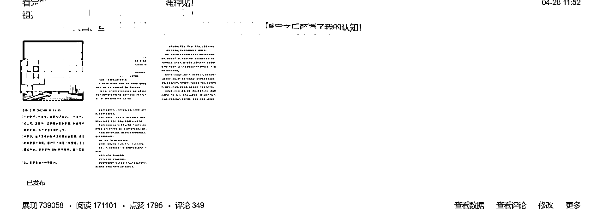

来源：https://t6lslyeg22.feishu.cn/docx/BzIfdvAQloqLImxjEhKcERAXn5f
商业杠杆来自资本、劳动力和复制边际成本为零的产品（代码和媒体）——《纳瓦尔宝典》
很显然，资料整理属于复制边际成本几乎为零的产品！
而且，可以加杠杆！！！
对于想学习又想赚钱的人来说，资料整理是一个既能让你输入，也能让你输出，还能变现的赛道！
对于单纯想赚点小钱的人来说，不管是速度，还是效果这都是一个不错的赛道！
对于那些后端有自己的产品、服务体系的人来说，这是一个不错的引流方式！
大家好，我是三恒，99年的老男人（长的有点着急），是今年新进的生财圈友，上个月由于新开了个小公司，创业阶段时间比较紧张，偶尔会刷刷生财风向标和精华帖，但是没有过多的下场实战，之前也跟着刀姐下场操作过chat gpt，赚了点小钱，这次趁着五一假期，选了一个小赛道下场实践了一下，今天给大家来汇报一下这几天取代的一个小成果！
想节省时间并且有过实操经验的，可以直接看结尾，有避坑总结和我认为资料整理最重要的一个环节！
资料整理+网盘拉新
如果你手里有1000个精准用户，你是否会把和用户建立深度连接的机会，交给别人的产品吗？
上面这段话，可以仔细思考一下，我认为，这才是资料整理最精髓的核心！（一定要有自己的产品，资料是别人的，产品必须是自己的！）
这个也是上次在这个生财内部看到有小伙伴发的，具体是哪个小伙伴来着给我忘了，（在这里先说声感谢），然后我就去了解了一下，结合我自己这方面的这个产品和业务就去选择了资料整理，不过我并没有去做这个网盘拉新，当然，对于普通人来说，如果你没有自己的这个知识储备、没有这个服务体系、自己能提供的价值也不是那么多的话，建议可以去结合这两个一起去做，这样的话呢，可以挣两份钱！
我之所以只做资料整理，不做网盘拉新的原因是因为用户来你这儿是带着目的来的，如果你直接免费的把网盘链接分享给他的时候，这个时候他对这份资料的商业价值是低估的，甚至是觉得免费的无所谓的，有了就有了的这种状态和心态！
而这种粉丝你也没办法判断他到底是不是你的潜在用户、到底是不是你的付费用户，所以如果单纯做网盘拉新和资料整理的话，我认为这只是很小很小的一部分，你只是完成了整个产品、用户变现端中最小的那一部分，也是最容易被忽视的那一部分！
但是当用户在你这儿产生消费，产生知识付费之后，你们之间已经建立了一种潜意识的信任！
通过交易，和价值互换，你们之间是相互了解的，一个如此100个，1000个，1万个这样积累下去，就是你为自己打造产品积累的忠实粉丝！
资料整理，只不过是你获取自己真实用户的一个媒介，重点是你要通过他们，打磨出属于自己的产品，知识体系或者说是商业模式！
在存量经济时代，握在手里的、可以让你随时触达的私域用户就是资源；
在存量经济时代，握在手里的、可以随时触达的、并且曾经为你付费过的知识用户就是资源！
这段话，我希望你反复思考！！！
任何的商业行为本质上是价值的交换，所以当你在从事商业活动是，一定要抓住你和用户接触的面积和深度！
这个时候赚钱已经是顺便的事了！
目前可选的资料整理，并且经过调研，我发现做的比较好的有这样几种：育儿教育资料、初中辅导资料、高考资料、考研资料（下面还有细分的英语、数学，物理，化学，语文等等各种的培训资料）都比较多，还有就是目前最火的天涯神贴，当然还有各种商业培训、ip付费啥的，都很多！
但是，我的建议是如果你要做资料整理赛道，一定要想清楚后期的一系列商业模式！
为什么？
因为，资料整理，重要的就是前面的“资料”这两个字，每一份资料背后对应的就是一部分目标用户群体，所以当你在选这个资料整理的时候，考虑三个要素：
第1个，是不是你喜欢、擅长且未来要做的事儿当中的一部分，如果符合可以去做！
第2个，这个资料所带来的价值，以及是否可以演变出更多的商业价值（包括但不限于人脉、资源、金钱等等）
第3个，通过你选择的“资料整理”，哪些新媒体渠道可以发挥的作用最大，包括用户群体，引流限制，获客速度，流量分配等等
我这次选的是商业类的资料为主（天涯神贴），在选资料这块还需要给大家的一个建议：
就是一定要想清楚你后端的变现体系和变现模式，是不是只能出售资料赚钱？还是说你需要的用户群体可以在后期叠加更多的服务，例如咨询、训练营、变现课、商业资源对接等等，这个决定了你的变现天花板？
比如我就不只是卖资料那么简单，后面再变现的那个板块我会说到！
我选择的头条号，后面我会说为什么选择头条号作为引流渠道！
从目前来看，引流的渠道如：知乎、抖音、小红书、快手、b站、公众号、头条号、闲鱼、百家号都可以，具体情况就看你选择的资料对应的目标用户群体在哪个平台比较活跃，当然还包括这个平台的流量分成等等！
然后如果我这边今天的话就着重说一下这个头条号，有两个原因：
其一呢是我了解的头条号规则比较深一点，我第1桶金是在头条号赚的，大概是在大一和大二那两年，最早是通过头条号做这个短剧的二次剪辑，还有影视剪辑，那会儿做这个平台上的这个流量分成比例还是比较高的，雇两个大学生，一个月几百1000多的工资，然后批量去发布短视频，那会儿比较简单，流量分成一个月也能赚个几万块钱，不多，但是也够了生活费！
其二是因为这个头条号，它相对这个引流来说还是比较宽松的，你基本上发布一篇帖子，提前在后台把这个关键词自动回复设置好，这个帖子爆了之后，别人就会去私信，这个时候你基本上就不需要管了，私信会自动把微信号发给他，他加你的微信之后，安排一个助理去回复，当客服这个角色，就可以跑通！
总的来说头条号就是引流比较快，可以尽快的试出这个效果！
当然，如果你玩其他平台玩的也挺熟练，规则啥的都明白都懂，也可以去试试其他平台，目前这些资料整理其他平台卖的都不错，就说明还是有方法去解决的！
变现，算是商业活动里面最重要的一个环节，不管你是做公司也好，还是做个人也好，前期哪有时间谈那么多什么理想、愿景，就是先搞钱，搞到钱之后再想一想如何把你这个钱转换到价值、服务和体系上，利用杠杆把它快速的放大！
这一点的话就没有什么技术含量了，而且复制成了几乎为零，你只需要把来的客户把资料发给他就可以，这个时候你选择收费或者说收完费之后再把网盘链接发给他都行，没要有没什么技术含量，这是最无脑的一种做法！
这两天我发现，资料有个好处，就是你的目标用户在你这儿购买资料之后，一定会有一些问题，这个时候如果你有一定的知识储备，是可以去做一些简单的咨询付费的，而且收益应该还不错啊。
基本上呢对一个咨询客户也会有两个收入，一个是你的前期咨询费用，
一个就是在你解决完他的问题之后，99%的人都会再给你发一个小红包表示感谢！
例如我在这个过程中就遇到过不止20位的用户咨询，基本上商业咨询费用我都是简单的收个200，结束后目前最低的都会给我包个88——120的红包，有的人可能会说这个200收低了，但是我认为这个阶段主要的是拿点小钱，了解大部分用户的真实需求、建立信任和提供服务，深度连接之后，后期你会有更大的这种产品去承接！
还有就是，卖资料、卖服务（咨询）、卖商业资源，在变现这块一定要充分的利用，好你引流私域这块的优势，所有的用户，所有的目标用户，加到你的微信，在你这儿购买了资料之后就说明2点；
第一，他对这个领域感兴趣，而且非常大，并且希望在这个领域取得一定的成绩！
第二，他有付费意识，包括但不限于9.9、1999、3999，甚至如果你有能力的话，还可以推出19,000多的商业系统培训课。
第三，一个渴望通过付费投资自己，变强或者搞钱，并且愿意为你知识付费的人，就是你最大的用户资源！
然后，总结性的说一下这四天取得的一个成绩：
4月28号中午的11点发的第1篇帖子，然后持续更新到5月2号的晚上10点多发的最后一篇帖子，总共是4天多的时间。
这四天呢是每天有差不多两个小时的精力在这儿比较集中，包括文案、引流、私域运营、变现承接这一块，因为假期的时间比较多，所以主要的爆发期就在这几天。
而且这次做这个的目的呢，就是想以最快的速度跑通这个最小MVP，从整理资料、获客、引流、变现，到拉高这个变现的天花板，如果能跑通并且投入产出比还不错，那就说明可操作性比较强，可以投入一些资源去复制和规模化！
看图：私域引流人数和公域引流贴的效果

但从速度和效果上来看，资料整理可以说是非常快了！
对于单纯想赚点小钱的人来说，这是一个很好搞钱的赛道！
对于那些后端有自己的产品、服务体系的人来说，这是一个不错的引流方式！
在整理资料的过程当中，一定要检查好完整版的资料，是否有别人的联系方式，例如微信号或者二维码。
在确定自己的目标人群以后，就需要去选择合适的引流资料，这个引流资料一定要选你目标人群最迫切需要解决的问题或者比较感兴趣的内容，关于这一点可以去做一些关键词的搜索，像微信指数、巨量算数等等
关于在哪个平台引流这一点也很关键，因为每个平台都引流的容忍度都不一样，当然每一个平台都有一定的规避方法，像抖音和小红书的话，最常见的就是把你主页的背景图换成有联系方式的背景图，尽量减少一对一私信去留个自己的联系方式，这样呢可以减少被举报封号的风险！这是我选择头条号的原因之一，就是它可以直接设置后台自动回复！当然有企业号的就比较方便，你也可以设置这个自动回复引流相对困难一点，不需要考虑那么多，大胆去做就行。
大部分人应该都选择的是这个微信来承接，这个时候呢，你一定要提前准备好，至少两个微信号，原因呢有两个，第1个是避免被加好友频繁导致用户加不进来，第2个呢就是避免收款频繁导致钱到不了账，当然你也可以选择支付宝收款或者其他收款方式！
如果你有一定的产品，且有一定的交付能力，那么一定要针对你的目标用户群体，以及对应的资料提供附加值，就是附加产品，最简单的呢就是上面提到的咨询付费针对某个问题，具体的提供解决方案！其次呢，就是自己的会员社群，或者说某个领域的训练营等等
在我看来，做资料整理最重要的是资料背后对应的用户，以及给用户提供的其他附加值或者其他附加产品，单纯卖资料来说，你需要走的是量，就是客单价低＋数量＋复购率。
但是如果你有一定的高附加值产品，利润还不错，并且是复利的，长期投入可以增加自己的影响力且确实能够给用户带来价值解决问题，那么这件事就可以做的那一份高客单的产品，可以抵上你买100份资料！
举个例子：我一份资料9.9，卖100份是1000，按照我试出来的这个转发率的话加微信200个人能够付款的大概在100个左右，也就是60%左右的转化率，这个应该算是比较高的！
但是如果我同时能够把这60%的父辈用户进行再次转化，这个就很有意思了，基本上会有30%的人愿意再次付费（前提是你得根据他的消费能力，设置好对应的产品），按每个人200元算，30个人就是6000，已经很不错了，如果这个付费产品是可以跑通的，那么你就可以加大力度去投这个高利润产品！
好了，今天的分享就聊到这儿，写的不好，大家多多支持，感谢！